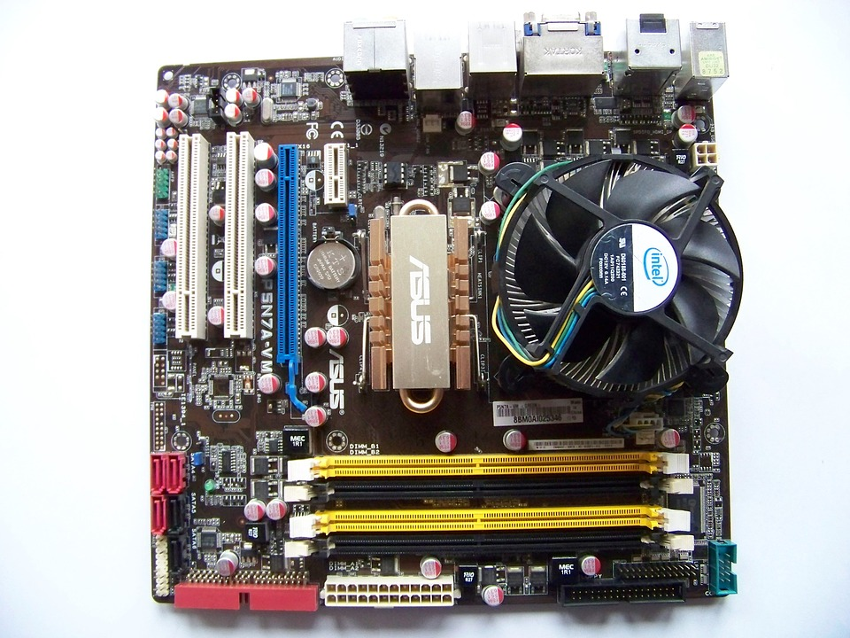

Moderkort
Man kan säga att moderkortet är datorns själ.
Moderkortet ser till att informationen mellan alla komponenter kommer till rätt ställe och i rätt tid. Man monterar alla komponenter såsom ramminnen, processor och grafikkort i moderkortet genom kablar eller direkt in i moderkortet.Idag har i princip alla moderkort portar för processorer, internminne och minst en SATA eller IDE port där man ansluter hårddiskar. Moderkortet finns i mängder av olika storlekar. Ett mindre moderkort är sämre eftersom då får man inte plats med t.ex lika många portar för ramminnen vilket sänker prestandan på din dator.
Ett större moderkort har mer plats för större och fler komponenter som t.ex fler portar för ramminnen, processorer och ett större grafikkort.
Ska jag köpa ett större eller mindre moderkort?
Det beror helt och hållet av vad du tänker göra på din dator.Tänker du använda din dator flitigt ska du ha ett större eftersom du då kommer behöva mer internminne, ramminnen och ett bra grafikkort.
Men tänker du bara surfa runt på internet och kanske streama lite räcker det med ett mindre eftersom du inte behöver så många komponenter. 